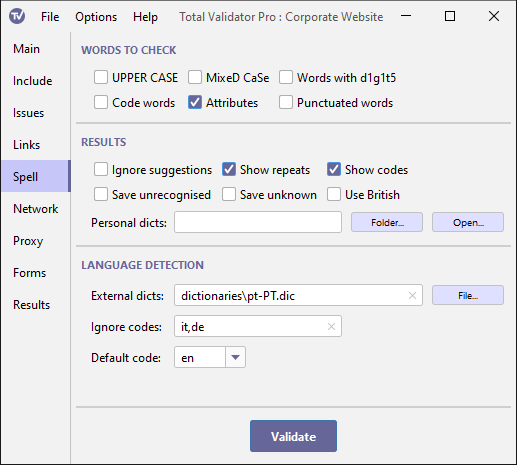

Documentation > Spell Check options
These options control what types of words to check (first group), what results are reported (second group), and how different languages are detected (third group). For an in-depth explanation of how the Spell Check system operates, see the special Spell checking topic.

Words to check
By default, certain types of words are not spell checked. This includes
words that are all upper case (for example: NASA), words that are mixed case
(for example: SpellCheck), words that contain digits (for example: Homer6), words surrounded by
characters other than quote marks (for example: <table>), and words within
<samp>, <code>, and <kbd> tags. Select the appropriate options to include
these types of words in the spell check.
The Attributes option will only spell check text within displayable
attributes such as: alt, title, summary, label, prompt, and standby.
Results
Ignore suggestions
When a word is not found in a dictionary a list of suggestions is presented in the results. Use this option to suppress this list.
Show repeats
A common issue, often difficult to spot through manual checks, are repeated words. It is common to see text such as "It was a a problem" or "It was the the problem". Using this option will highlight any repeated words in the text.
Show codes
When you click on unrecognised words marked as spelling mistakes on a page report they will be saved to a personal dictionary for the specific language code the word was spell checked against. If your pages contain words in multiple languages it may not always be clear which dictionary will be used. Use this option to display the language code used next to each word.
Save unrecognised
Using this option has the same effect as clicking on every unrecognised word marked as a spelling mistake on each page report. It will save all the words not found by the spell check into separate dictionary files for each language code.
These files are saved to the Personal dictionaries folder to be used with future spell checks. You can edit these files to remove any words which are genuinely misspelt. When editing note that these files must be plain text consisting of one word per line, with no duplicates, and must be saved using UTF-8 encoding.
Save unknown
Instead of ignoring words with unknown language codes, all these words will be saved into a separate dictionary for each unrecognised language. You can then point to these files using the External dictionaries option, so they can then be used to spell check languages not normally recognised by Total Validator.
These files are saved to the Personal dictionaries folder, but you may wish to move them elsewhere to prevent them being accidentally overwritten. You may also wish to edit them, but note that a dictionary file must be a plain text file consisting of one word per line, with no duplicates, and must be saved using UTF-8 encoding.
Note that for most glyph-based languages, like Chinese, all the words are upper case,
so you may need to use the UPPER CASE option to ensure that words are saved.
Use British
By default, any English words (language codes starting with 'en'), except those specifically marked as British (en-GB), will be spell checked using the American (en-US) dictionary.
If most of the English on the site is British or uses mostly British spellings, use this option to reverse the default. Any English words (language codes starting with 'en'), except those explicitly marked as American (en-US), will then be spell checked using the British (en-GB) dictionary.
Personal dictionaries
When words are not found in the dictionary, you can
add these words to a personal dictionary by clicking on them.
Each word will be stored in a dictionary named after the language code it was spell checked against.
These dictionaries will automatically be saved to the Personal dictionaries folder and automatically used
the next time you run a spell check.
By default, this is the sub-folder dics within the
Results folder. Use this option to
select another folder to store these dictionaries.
Because Total Validator listens for spell check corrections as soon as it is started, if you change this folder you must restart Total Validator for it to have any affect.
Language detection
External dictionaries
This is a comma-separated list of dictionaries. These will normally be for languages other than the internal ones supplied with Total Validator (English, French, German, Italian, Spanish). But they may also be for specific language country codes or even be used to replace the internal dictionaries.
Note that dictionary files must be plain text files consisting of
one word per line, with no duplicates, and must be saved using UTF-8 encoding.
Only file names starting with a valid language code and ending with .dic will be used and the
language code prefix itself must end with '.', for example: fr-ca.dic or pt-PT.mydictionary.dic,
but not fr-CA nor fr-CA-dic.
The language code is treated as case-insensitive so if you supply
fr-ca.dic and fr-CA.dic, only one of these will be used (no guarantee which one).
Any files that match the names of the internal ones, will be used instead of them. For example: fr.dic, en-GB.dic
Ignore codes
This is a comma-separated list of language codes to ignore when testing. All words within the section of the pages matching these language codes will be ignored. This includes words that would normally be checked using an internal dictionary or those matching languages specified using the External dictionaries option.
Default code
Total Validator tries to determine the language code appropriate for each word, and which dictionary to use to check it against.
It first tests for a 'lang' attribute on each containing element back to <html>. Failing that it looks for content-language
within a <meta> tag, and finally for a content-language HTTP header. If no code can be found
the word will be ignored, and many misspelt words my be missed.
Use this option to enter a language code to use when none can be found. The drop-down lists the internal languages that we provide, but you can enter any valid language code here. Note that unless there is a dictionary for this language (internal or specified with External dictionaries) then matching words will still not be checked.